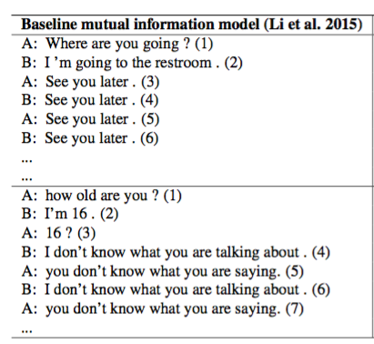
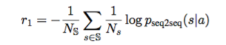
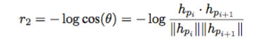
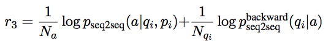
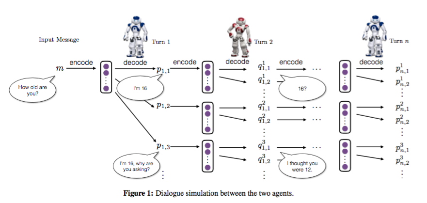
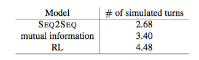
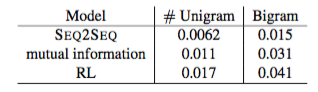
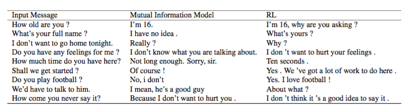

Deep Reinforcement Learning for Dialogue Generation #PaperWeekly#
本文将会分享一篇深度增强学习在bot中应用的文章，增强学习在很早的时候就应用于bot中来解决一些实际问题，最近几年开始流行深度增强学习，本文作者将其引入到最新的bot问题中。paper的题目是Deep Reinforcement Learning for Dialogue Generation，作者是Jiwei Li，最早于2016年6月10日发在arxiv上。
现在学术界中bot领域流行的解决方案是seq2seq，本文针对这种方案抛出两个问题：
1、用MLE作为目标函数会导致容易生成类似于“呵呵呵”的reply，grammatical、safe但是没有营养，没有实际意义的话。
2、用MLE作为目标函数容易引起对话的死循环，如下图：

解决这样的问题需要bot框架具备以下的能力：
1、整合开发者自定义的回报函数，来达到目标。
2、生成一个reply之后，可以定量地描述这个reply对后续阶段的影响。
所以，本文提出用seq2seq+增强学习的思路来解决这个问题。
说到增强学习，就不得不提增强学习的四元素：
- Action
这里的action是指生成的reply，action空间是无限大的，因为可以reply可以是任意长度的文本序列。
- State
这里的state是指[pi,qi]，即上一轮两个人的对话表示。
- Policy
policy是指给定state之后各个action的概率分布。可以表示为：pRL(pi+1|pi, qi)
- Reward
reward表示每个action获得的回报，本文自定义了三种reward。
1、Ease of Answering
这个reward指标主要是说生成的reply一定是容易被回答的。本文用下面的公式来计算容易的程度：

其实就是给定这个reply之后，生成的下一个reply是dull的概率大小。这里所谓的dull就是指一些“呵呵呵”的reply，比如“I don’t know what you are talking about”等没有什么营养的话，作者手动给出了这样的一个dull列表。
2、Information Flow
生成的reply尽量和之前的不要重复。

这里的h是bot的reply表示，i和i+1表示该bot的前后两轮。这个式子表示同一个bot两轮的对话越像reward越小。
3、Semantic Coherence
这个指标是用来衡量生成reply是否grammatical和coherent。如果只有前两个指标，很有可能会得到更高的reward，但是生成的句子并不连贯或者说不成一个自然句子。

这里采用互信息来确保生成的reply具有连贯性。
最终的reward由这三部分加权求和计算得到。
增强学习的几个要素介绍完之后，接下来就是如何仿真的问题，本文采用两个bot相互对话的方式进行。
step 1 监督学习。将数据中的每轮对话当做target，将之前的两句对话当做source进行seq2seq训练得到模型，这一步的结果作为第二步的初值。
step 2 增强学习。因为seq2seq会容易生成dull reply，如果直接用seq2seq的结果将会导致增强学习这部分产生的reply也不是非常的diversity，从而无法产生高质量的reply。所以，这里用MMI(Maximum Mutual Information，这里与之前Jiwei Li的两篇paper做法一致)来生成更加diversity的reply，然后将生成最大互信息reply的问题转换为一个增强学习问题，这里的互信息score作为reward的一部分（r3）。用第一步训练好的模型来初始化policy模型，给定输入[pi,qi]，生成一个候选列表作为action集合，集合中的每个reply都计算出其MMI score，这个score作为reward反向传播回seq2seq模型中，进行训练。整个仿真过程如下图：

两个bot在对话，初始的时候给定一个input message，然后bot1根据input生成5个候选reply，依次往下进行，因为每一个input都会产生5个reply，随着turn的增加，reply会指数增长，这里在每轮对话中，通过sample来选择出5个作为本轮的reply。
接下来就是评价的部分，自动评价指标一共两个：
1、对话轮数。

很明显，增强学习生成的对话轮数更多。
2、diversity。

增强学习生成的词、词组更加丰富和多样。
下图给出了一个MMI seq2seq与RL方法的对比结果：

RL不仅仅在回答上一个提问，而且常常能够提出一个新的问题，让对话继续下去，所以对话轮数就会增多。原因是，RL在选择最优action的时候回考虑长远的reward，而不仅仅是当前的reward。
本文是一篇探索性的文章，将seq2seq与RL整合在一起解决bot的问题是一个不错的思路，很有启发性，尤其是用RL可以将问题考虑地更加长远，获得更大的reward。用两个bot相互对话来产生大量的训练数据也非常有用，在实际工程应用背景下数据的缺乏是一个很严重的问题，如果有一定质量的bot可以不断地模拟真实用户来产生数据，将deep learning真正用在bot中解决实际问题就指日可待了。
RL解决bot问题的文章在之前出现过一些，但都是人工给出一些feature来进行增强学习，随着deepmind用seq2seq+RL的思路成功地解决video games的问题，这种seq2seq的思想与RL的结合就成为了一种趋势，朝着data driven的方向更进一步。
一点思考，欢迎交流。